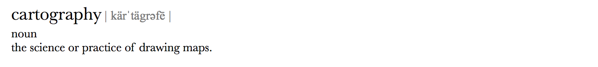
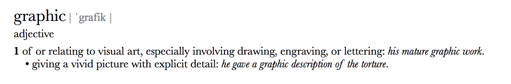
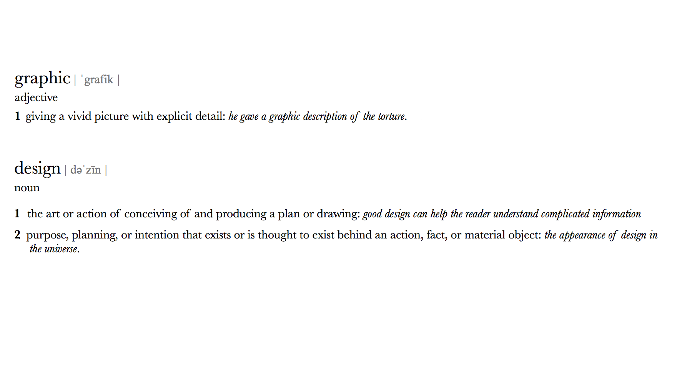
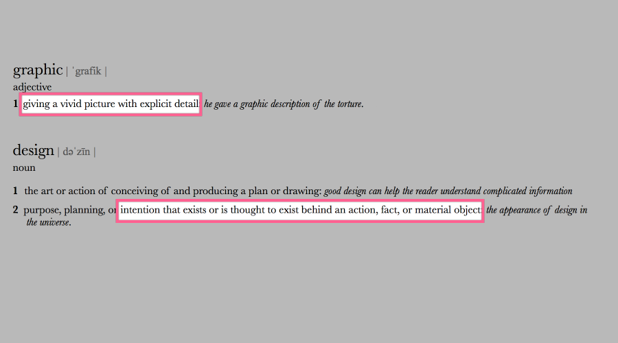
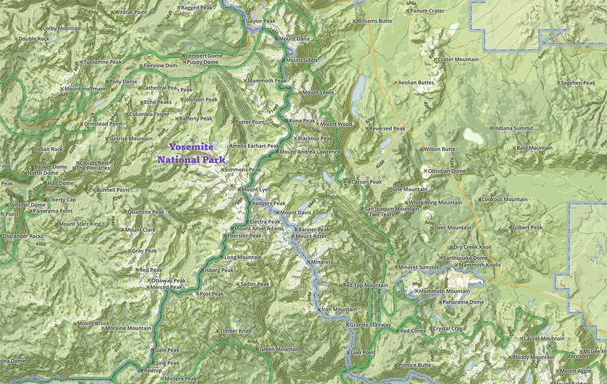
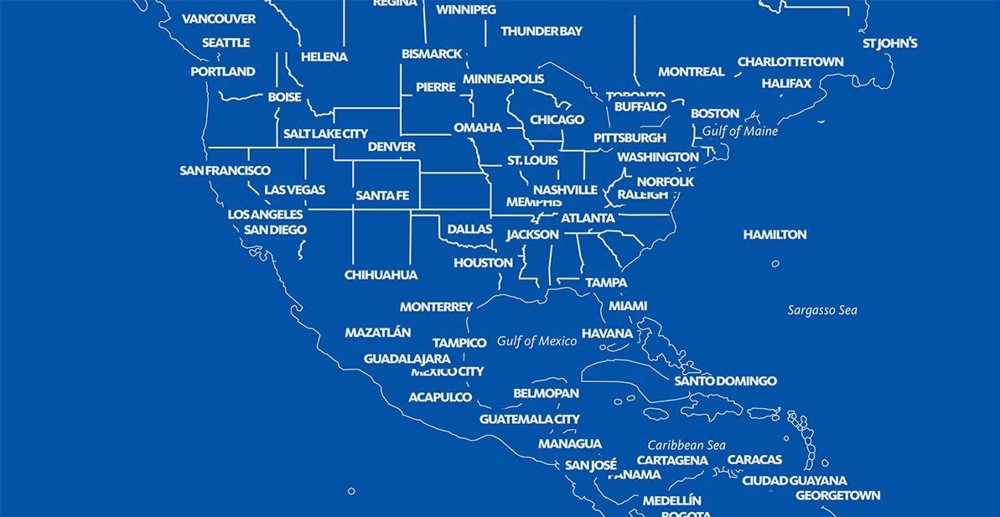
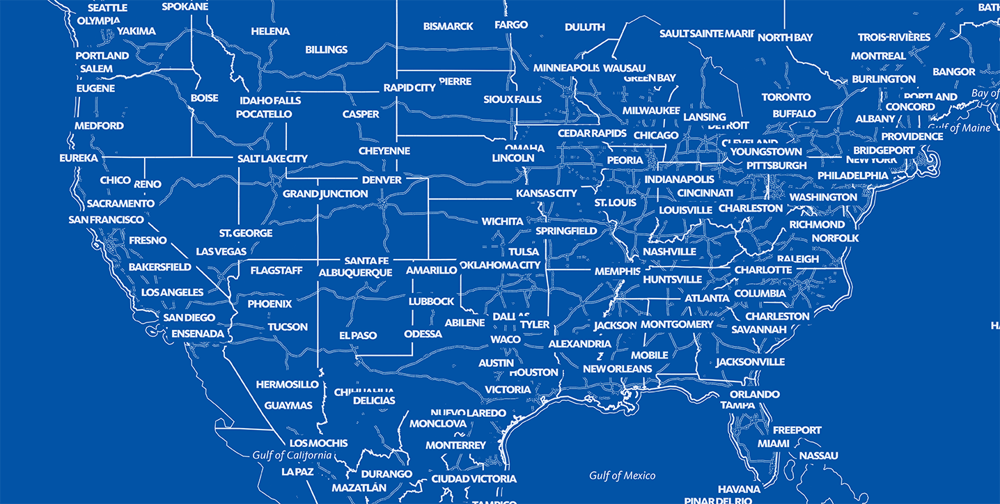
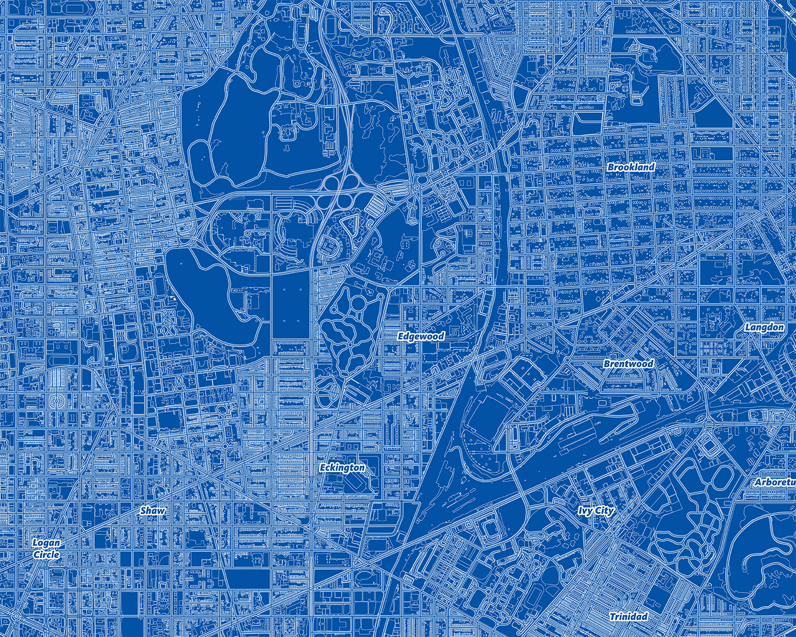
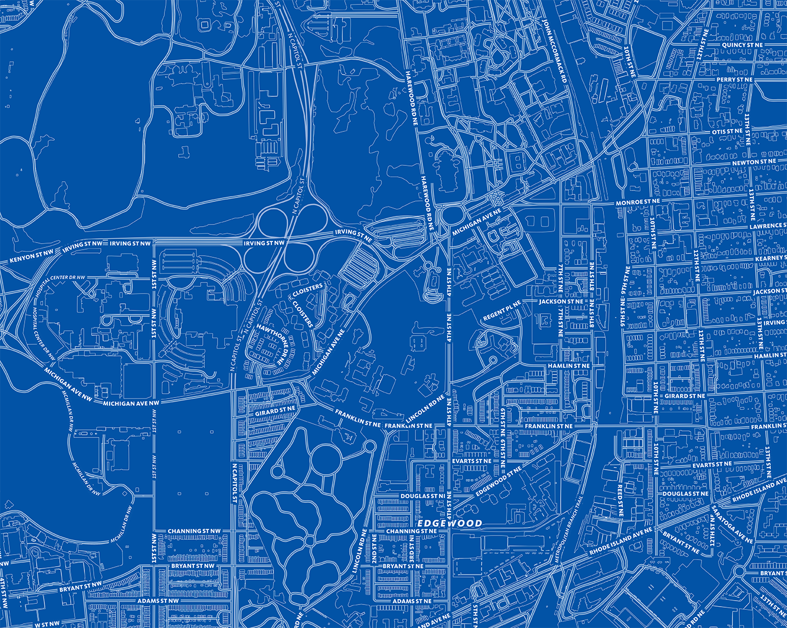
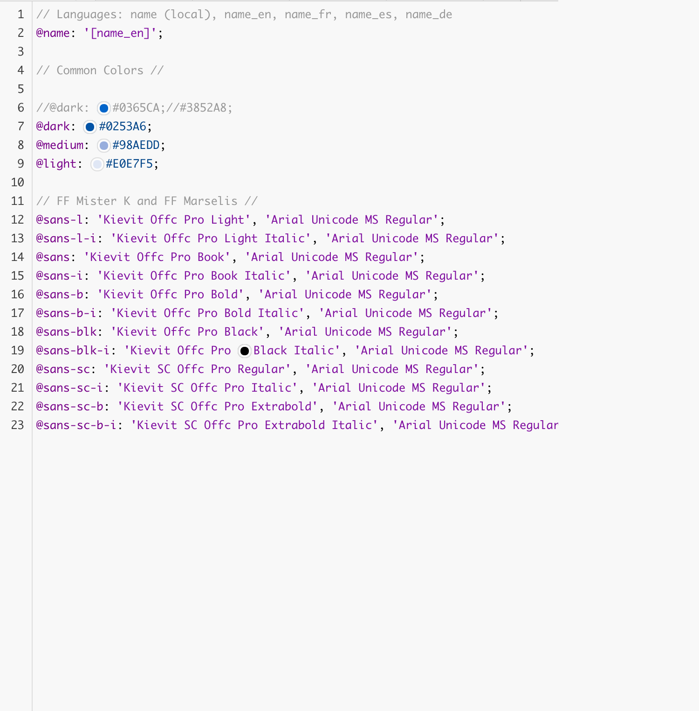

designer as cartographer
hi! i'm @amyleew
designer and navigator @mapbox
mapbox is: platform to design & build maps
 design
design build
build
Cartographer's Checklist:
- What is the purpose of the map?
- Who is the audience?
- What are the format and scale?
- How will the map be produced and reproduced?
Another key player in
map design...
what i talk about when i talk about
(graphic) design



giving visual form to an action, intention, or material object.
maps serve a function
... isn't graphic design all about making things beautiful?
can't we have beauty and usability?
form = function
Elements of good design:
- Hierachy
- Form
- Color
- Texture
- Typography
 Narrative
Narrativevar data;
var narrative;
data == narrative;
var inspiration;
var narrative;
inspiration == narrative;
Let's look at some examples:
Alltrails

Blueprint





space between print and web
paper === screen
design for both digital + physical
Elements of good design:
- Hierachy
- Form
- Color
- Texture
- Typography
Cartographer's checklist:
- What is the purpose of the map?
- Who is the audience?
- What are the format and scale?
- How will the map be produced and reproduced?
- How will you acquire your map data?
References:
- GUIDELINES FOR PRODUCING CARTOGRAPHIC OUTPUT, M. Bunch, 2002, Faculty of Environmental Studies, York University
- Who is the audience?
- Inside | Out, Malcom Grier
- How will the map be produced and reproduced?
- How will you acquire your map data?
Tools:
- Mapbox Studio
- Mapbox GL JS
- Mapbox Studio Classic
- Mapbox Studio Classic - Image export
- PostGIS Manual
- PostgreSQL / PostGIS
thanks for listening.
go be designers.
@amyleew designer @mapbox